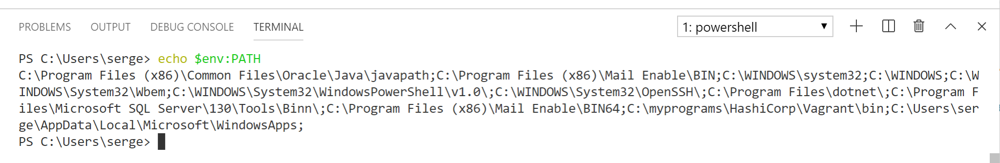
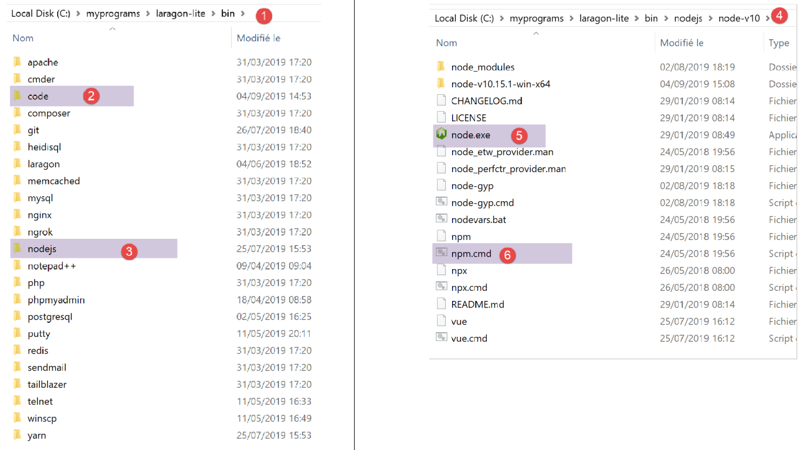
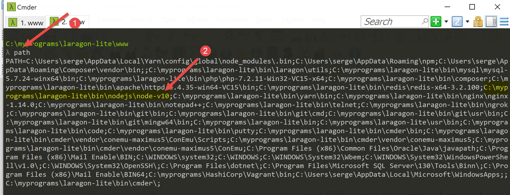
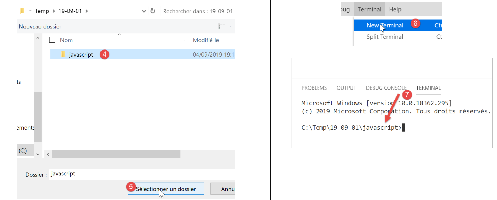

2. Einrichten einer Entwicklungsumgebung
Wir verwenden die folgenden Tools (unter Windows 10 x64):
- [Laragon] zum Ausführen des PHP-Webservers;
- [NetBeans] zum Bearbeiten des PHP-Codes;
- [Visual Studio Code] zum Schreiben von JavaScript-Code;
- [Node.js] zum Ausführen;
- [npm] zum Herunterladen und Installieren der benötigten JavaScript-Bibliotheken;
2.1. Entwicklungsumgebung für den Webserver
Die PHP-Skripte wurden in der folgenden Umgebung geschrieben und getestet:
- einer Apache-Webserver-/MySQL-DBMS-/PHP-7.3-Umgebung namens Laragon;
- die Entwicklungs-IDE NetBeans 10.0;
2.1.1. Installation von Laragon
Laragon ist ein Paket, das mehrere Softwarekomponenten vereint:
- einen Apache-Webserver. Wir werden ihn verwenden, um Webskripte in PHP zu schreiben;
- das Datenbankmanagementsystem MySQL;
- die Skriptsprache PHP;
- einen Redis-Server, der Caching für Webanwendungen bereitstellt:
Laragon kann (Stand: März 2019) unter folgender Adresse heruntergeladen werden:


- Die Installation [1-5] führt zu folgender Verzeichnisstruktur:

- [6] enthält das PHP-Installationsverzeichnis;
Beim Starten von [Laragon] wird das folgende Fenster angezeigt:

- [1]: das Laragon-Hauptmenü;
- [2]: Die Schaltfläche [Start All] startet den Apache-Webserver und die MySQL-Datenbank;
- [3]: Die Schaltfläche [WEB] zeigt die Webseite [http://localhost] an, die der PHP-Datei [<laragon>/www/index.php] entspricht, wobei <laragon> der Laragon-Installationsordner ist;
- [4]: Über die Schaltfläche [Database] können Sie die MySQL-Datenbank mit dem Tool [phpMyAdmin] verwalten. Dieses Tool müssen Sie zuvor installieren;
- [5]: Die Schaltfläche [Terminal] öffnet ein Befehlsterminal;
- [6]: Die Schaltfläche [Root] öffnet ein Windows-Explorer-Fenster, das auf den Ordner [<laragon>/www] ausgerichtet ist, dem Stammverzeichnis der Website [http://localhost]. Hier sollten Sie alle Webanwendungen ablegen, die vom Apache-Server von Laragon verwaltet werden;
Öffnen wir ein Laragon-Terminal [5]:

- in [1] den Terminaltyp. In [6] stehen drei Terminaltypen zur Auswahl;
- in [2, 3]: der aktuelle Ordner;
- Geben Sie in [4] den Befehl [echo %PATH%] ein, der die Liste der Ordner anzeigt, die bei der Suche nach einer ausführbaren Datei durchsucht werden. Alle Hauptordner von Laragon sind in diesem Pfad enthalten, was nicht der Fall wäre, wenn Sie eine Eingabeaufforderung [cmd] unter Windows öffnen würden. Wenn Sie in diesem Dokument Befehle zur Installation einer bestimmten Software eingeben müssen, werden diese Befehle in der Regel in einem Laragon-Terminal eingegeben;
2.1.2. Installation der NetBeans 10.0 IDE
Die NetBeans 10.0 IDE kann unter der folgenden Adresse heruntergeladen werden (März 2019):
https://netbeans.apache.org/download/index.HTML

Die heruntergeladene Datei ist eine ZIP-Datei, die einfach entpackt werden muss. Sobald NetBeans installiert und gestartet ist, können Sie Ihr erstes PHP-Projekt erstellen.

- Wählen Sie unter [1] die Option „Datei / Neues Projekt“ aus;
- Wählen Sie unter [2] die Kategorie [PHP] aus;
- Wählen Sie unter [3] den Projekttyp [PHP-Anwendung] aus;

- Geben Sie in [4] einen Namen für das Projekt ein;
- Wählen Sie in [5] einen Ordner für das Projekt aus;
- Wählen Sie in [6] die heruntergeladene PHP-Version aus;
- Wählen Sie in [7] die UTF-8-Kodierung für PHP-Dateien aus;
- Wählen Sie in [8] den Modus [Script], um PHP-Skripte im Befehlszeilenmodus auszuführen. Wählen Sie [Local WEB Server], um ein PHP-Skript in einer Webumgebung auszuführen;
- Geben Sie in [9,10] das Installationsverzeichnis für den PHP-Interpreter des Laragon-Pakets an:

- Wählen Sie [Fertigstellen], um den Assistenten zur Erstellung des PHP-Projekts abzuschließen;

- In [11] wird das Projekt mithilfe eines Skripts [index.php] erstellt;
- In [12] schreiben wir ein minimales PHP-Skript;
- In [13] führen wir [index.php] aus;

- in [14] die Ergebnisse im [Ausgabe]-Fenster von NetBeans;
- in [15] erstellen wir ein neues Skript;
- in [16] das neue Skript;
Der Leser kann alle folgenden Skripte in verschiedenen Ordnern innerhalb desselben PHP-Projekts erstellen. Der Quellcode für die Skripte in diesem Dokument ist in der folgenden NetBeans-Verzeichnisstruktur verfügbar:

Die Skripte in diesem Dokument befinden sich im Projektverzeichnis [scripts-console] [1]. Wir werden außerdem PHP-Bibliotheken verwenden, die im Ordner [<laragon-lite>/www/vendor] [2] abgelegt werden, wobei <laragon-lite> das Installationsverzeichnis für die Laragon-Software ist. Damit NetBeans die Bibliotheken in [2] als Teil des Projekts [scripts-console] erkennt, müssen wir den Ordner [vendor] [2] in den [Include Path] [3] des Projekts aufnehmen. Wir werden NetBeans so konfigurieren, dass der Ordner [<laragon-lite>/www/vendor] [2] in jedes neue PHP-Projekt aufgenommen wird, nicht nur in das Projekt [scripts-console]:

- Gehen Sie in [1-2] zu den NetBeans-Optionen;
- Konfigurieren Sie in [3-4] die PHP-Optionen;
- Konfigurieren Sie in [5-7] den [Global Include Path] von PHP: Die in [7] aufgeführten Ordner werden automatisch in den [Include Path] jedes PHP-Projekts aufgenommen;

- Rufen Sie in [9] die Eigenschaften des Zweigs [Include Path] auf;
- in [10-11] die neuen Bibliotheken, die von NetBeans erkundet wurden. NetBeans durchsucht den PHP-Code in diesen Bibliotheken und speichert deren Klassen, Schnittstellen, Funktionen usw., um dem Entwickler Unterstützung zu bieten;

- in [12] verwendet ein Code-Schnipsel die Klasse [PhpMimeMailParser\Parser] aus der Bibliothek [vendor/php-mime-mail-parser];
- In [13] schlägt NetBeans die Methoden dieser Klasse vor;
- In [14-15] zeigt NetBeans die Dokumentation für die ausgewählte Methode an;
Das Konzept des [Include-Pfads] ist spezifisch für NetBeans. PHP kennt dieses Konzept ebenfalls, aber es handelt sich im Prinzip um zwei unterschiedliche Konzepte.
Nachdem die Entwicklungsumgebung nun eingerichtet ist, können wir uns mit den Grundlagen von PHP befassen.
2.2. Entwicklungsumgebung für JavaScript
Diese Tools können mit Laragon installiert werden (siehe Abschnitt „Links“):

Installieren Sie in [4] [node.js]. Sobald die Installation abgeschlossen ist, öffnen Sie ein Laragon-Terminal (siehe Abschnitt „Links“) und überprüfen Sie die Version des installierten [node.js] (1) sowie die von [npm] (2):

Als Nächstes installieren wir Visual Studio Code, oft auch als [code] oder [VSCode] bezeichnet [3-6]. Sobald dies erledigt ist, können wir dieses Entwicklungstool starten:


2.2.1. Konfiguration von Visual Studio Code
Wir zeigen nun, wie wir [VSCode] konfiguriert haben, damit der Leser die Screenshots verstehen kann, die von Zeit zu Zeit erscheinen werden. Es steht dem Leser frei, [VSCode] nach eigenem Ermessen zu konfigurieren. Er kann sogar seinen bevorzugten Arbeitsbereich einrichten. Dies ist für das, was wir als Nächstes tun werden, nicht wichtig.
Zunächst ändern wir das Erscheinungsbild des [VSCode]-Fensters, sodass es einen hellen statt eines schwarzen Hintergrunds hat:

Dann blenden wir die linke Seitenleiste [1-2] aus, deren Elemente auch im Menü verfügbar sind. In [3-6] stellen wir den Code so ein, dass er sich bei jedem Speichern der Datei sowie bei jedem Kopieren und Einfügen automatisch formatiert.

Nachdem Sie die Konfiguration gespeichert haben [Strg-S], können Sie das Fenster [Einstellungen] schließen [7]. Sie können jederzeit zur [VSCode]-Konfiguration zurückkehren [8-10]:

Diese Einstellungen werden in einer [settings.json]-Datei gespeichert, die direkt bearbeitet werden kann. Öffnen wir das Fenster [Einstellungen] wie abgebildet:

Unter [4] können Sie die Datei [settings.json] direkt bearbeiten:

- in [1] den Pfad zur Datei [settings.json]. Eine Möglichkeit, die Standardeinstellungen wiederherzustellen, besteht darin, diese Datei zu löschen;
- in [2] die soeben konfigurierten Einstellungen;
Öffnen wir nun ein Terminal in [VSCode] [1-2]:

- in [3] den Typ des geöffneten Terminals, hier PowerShell;
- in [4] können Sie Windows-Befehle eingeben;
- in [6] können Sie weitere Terminals öffnen;
- in [5], die Liste der offenen Terminals;
- in [7] schließt das aktive Terminal;
Wir werden das [VSCode]-Terminal verwenden, um JavaScript-Pakete (Bibliotheken) mit dem Tool [npm] (Node Package Manager) zu installieren. Überprüfen wir, wie zuvor im Laragon-Terminal, welche Version von [npm] installiert ist:

Wir sehen, dass der Befehl [npm] nicht erkannt wurde. Das bedeutet, dass er nicht Teil des PATH des Terminals ist (der Liste der Ordner, in denen nach einer ausführbaren Datei, in diesem Fall [npm], gesucht wird). Wir können den vom Terminal verwendeten PATH herausfinden:

Die ausführbare Datei [npm] ist in diesen Ordnern nicht zu finden. Wie die anderen von Laragon installierten Tools befindet sie sich im Ordner [<laragon>\bin] von Laragon, genauer gesagt im Ordner [nodejs] [4-6].

Um [VSCode] zu starten und auf [npm] zuzugreifen, starten wir [VSCode] über ein Laragon-Terminal. Bei diesem Start übernimmt [VSCode] den PATH des Laragon-Terminals, der die ausführbaren Ordner [node] und [npm] enthält:

- in [1]: Geben Sie den Befehl [path] ein;
- in [2]: die Liste der Ordner im PATH. Wir sehen den Ordner [node-v10] [2], der sicherstellt, dass die ausführbaren Dateien von [node] und [npm] gefunden werden;
[VSCode] wird über den Befehl [code] von einem Laragon-Terminal aus gestartet:

- in [2] öffnen Sie ein PowerShell-Terminal in [VSCode];
- in [3-4] sehen Sie, dass die ausführbaren Dateien [node] und [npm] verfügbar sind;
Hinweis: Schließen Sie das Laragon-Terminal, über das die [VSCode]-Entwicklungsumgebung gestartet wurde, nicht, da sonst VSCode selbst geschlossen wird.
Wir nehmen noch eine letzte Konfiguration vor: Wir ändern das Standardterminal für [VSCode]:


Die Datei [settings.json] wird sofort aktualisiert:

Öffnen wir nun ein neues [VSCode]-Terminal [1]:

- in [2] ein [cmd]-Terminal (nicht PowerShell);
- In [3] zeigt der Befehl [path] den PATH des Terminals an;
- in [4] sind die ausführbaren Ordner [node] und [npm] deutlich zu sehen
2.2.2. Erweiterungen zu Visual Studio Code hinzufügen
Erstellen wir eine JavaScript-Datei mit [VSCode]:


- In [3-4] erstellen wir einen Ordner;
- in [5] legen wir ihn als aktuellen Ordner in [VSCode] fest;
- Öffnen Sie in [6] ein Terminal;
- in [7] sehen Sie, dass Sie sich nun im ausgewählten Ordner befinden. Die folgenden Schritte werden in diesem Ordner ausgeführt;

- In [1-3]: Erstellen Sie einen neuen Ordner;
- In [4]: Fügen Sie diesem Ordner eine Datei hinzu;

- in [5-7]: Erstellen Sie Ihr erstes JavaScript-Programm;

- In [8-9]: Führen Sie das JavaScript-Programm aus;
- Das Ergebnis wird in der Ausführungskonsole [10] angezeigt. In [11] sehen wir den ausgeführten Befehl: Die [node]-Anwendung hat das Skript [test-01.js] ausgeführt. Dies war möglich, da sich diese ausführbare Datei im [VSCode]-PATH befindet; andernfalls hätten wir eine Fehlermeldung erhalten, dass der Befehl [node] unbekannt ist;
Fahren wir auf die gleiche Weise fort, um ein zweites Skript [test-02.js] auszuführen:

- In [1-3] wird das neue Skript definiert. Die Anweisung [use strict] in Zeile 1 erfordert eine strenge Syntaxprüfung. In diesem Zusammenhang muss jede Variable mit einem der Schlüsselwörter [let, const, var] deklariert werden. Dies ist bei der Variablen [x] in Zeile 2 nicht der Fall;
- wenn wir diesen Code mit [Strg-F5] ausführen, erhalten wir den Fehler [5]. Es ist möglich, vor der Ausführung auf diese Art von Fehler hingewiesen zu werden. Dies ist vorzuziehen. Wir werden zwei Dinge tun:
- eine Bibliothek namens [eslint] über [npm] installieren, die prüft, ob die Syntax des Skripts dem ECMAScript-6-Standard entspricht;
- eine Visual Studio Code-Erweiterung installieren, die ebenfalls ESLINT heißt und die Verwendung der [eslint]-Bibliothek in [VSCode] erleichtert;
Zunächst installieren wir die JavaScript-Bibliothek [eslint] mit dem Tool [npm]. Um eine [npm]-Bibliothek (auch als Paket bezeichnet) zu installieren, müssen Sie deren genauen Namen kennen. Falls Sie diesen nicht kennen, können Sie die [npm]-Website unter der URL (2019) [https://www.npmjs.com/] aufrufen:

- in [3] die Pakete, die mit [esl] beginnen;
- In [4-6] finden Sie das [eslint]-Paket;

- in [7] den [npm]-Befehl zum Installieren des [eslint]-Pakets;
- in [8] die Paketkonfiguration;
- in [9], wie man damit die Syntax eines JavaScript-Skripts überprüft;
Wir installieren das [eslint]-Paket in einem [Terminal]-Fenster in [VSCode]. Zunächst müssen wir eine [package.json]-Datei im Stammverzeichnis des [VSCode]-Arbeitsverzeichnisses erstellen. Diese Datei enthält die Liste der JavaScript-Pakete, die vom [VSCode]-Projekt verwendet werden:

- in [1] klicken Sie mit der rechten Maustaste in den Projekt-Explorer (nicht auf den Ordner „tests“);
- in [3-4] erstellen Sie die Datei [package.json] im Stammverzeichnis des [JavaScript]-Projekts, auf derselben Ebene wie der Ordner [tests] (aber nicht innerhalb von [tests]);
- in [4-6] fügen Sie der Datei [package.json] ein leeres JSON-Objekt hinzu;
Öffnen Sie anschließend ein [VSCode]-Terminal, um [eslint] zu installieren:

- In [2] befinden Sie sich im Stammverzeichnis des [javascript]-Projekts;
- In [3] der Befehl, der das [eslint]-Paket installiert;
- Nach der Ausführung
- In [4-5] wurde die Datei [package.json] geändert. Zeile 3 zeigt die Version von [eslint] an, die installiert wurde. Zeile 2, [devDependencies], entspricht der Option [--save-dev], die bei der Installation verwendet wurde. Dieses Argument bedeutet, dass die installierte Abhängigkeit in der Datei [package.json] als Teil der Eigenschaft [devDependencies] aufgeführt werden muss. Diese Eigenschaft listet die Projektabhängigkeiten auf, die im Entwicklungsmodus benötigt werden, nicht jedoch im Produktionsmodus. Tatsächlich wird die Abhängigkeit [eslint] nur während der Entwicklung benötigt, um zu überprüfen, ob der geschriebene Code dem ECMAScript-Standard entspricht;
- In [6] ist im Projekt ein Ordner [node_modules] erschienen. Dies ist der Ordner, in dem die Abhängigkeiten des Projekts installiert sind;

- In [7] sind einige der installierten Pakete zu sehen. Es sind ziemlich viele. Tatsächlich wurde nicht nur das [eslint]-Paket installiert, sondern auch alle Pakete, auf denen es basiert;

- [1-2]: Führen Sie in einem [VSCode]-Terminal den Befehl zur Konfiguration des [eslint]-Pakets aus. Dabei werden Ihnen mehrere Fragen [3] gestellt, um festzustellen, wie Sie [eslint] nutzen möchten. Im Zweifelsfall belassen Sie die Standardoptionen unverändert. Um eine Option auszuwählen, navigieren Sie mit den Aufwärts- und Abwärtspfeiltasten Ihrer Tastatur zur gewünschten Option und bestätigen Sie diese anschließend;
- In [4] wurde im Stammverzeichnis des Projekts eine Datei namens [.eslintrc.js] erstellt;
- in [6] den Inhalt der Datei. Sie können den Inhalt in Ihre eigene Datei kopieren;
module.exports = {
"env": {
"browser": true,
"es6": true
},
"extends": "eslint:recommended",
"globals": {
"Atomics": "readonly",
"SharedArrayBuffer": "readonly"
},
"parserOptions": {
"ecmaVersion": 2018,
"sourceType": "module"
},
"rules": {
}
};
Dies reicht nicht aus, um Fehler in der Datei [test-02.js] zu melden:

- Sie müssen den Befehl [2-3] eingeben, damit die Datei [tests/test-02.js] analysiert wird;
- in [4] wird der Fehler bezüglich der nicht deklarierten Variablen erkannt;
Wir werden eine Erweiterung für [VSCode] hinzufügen, mit der wir JavaScript-Fehler in Echtzeit sehen können. Diese Erweiterung basiert auf dem [eslint]-Paket, das wir installiert haben:

- In [3-5] installieren wir die Erweiterung namens [ESLint];

- In [1] wird eine Informationsseite zur neu installierten Erweiterung angezeigt;
- in [2] sehen wir, dass der Validierungsmodus von [ESLint] auf [type] eingestellt ist, was bedeutet, dass die Syntax von JavaScript-Skripten während der Eingabe überprüft wird;
ESLint kann über die allgemeine [VSCode]-Konfigurationsdatei konfiguriert werden:

- in [6-7] die [ESLint]-Konfiguration. Hier können Sie sie ändern;
Kehren wir nun zur Datei [test-02.js] zurück:

- In [3-4] werden nun Fehler im Zusammenhang mit der Variablen [x] markiert;
- in [5]: die Anzahl der ESLint-Fehler in der Datei;
- in [6] zeigt an, dass sich im Ordner [tests] Dateien mit Fehlern befinden;
Wenn wir den Fehler beheben, verschwinden die ESLint-Warnungen:

Installieren wir nun eine Erweiterung namens [Code Runner]:

- Sobald die [Code-Runner]-Erweiterung installiert ist [1-5], können Sie sie über [6-7] (oben) konfigurieren;

- in [1-2] die Konfigurationsoptionen für [Code-Runner];
- In [3] legen wir fest, dass das Ausgabeterminal vor jeder Ausführung gelöscht werden soll;
- Suchen Sie in [4] das Element [Executor Map], in dem die Ausführungstools für verschiedene Sprachen aufgelistet sind;
- in [5-6] kopieren Sie die Konfiguration in die Zwischenablage;
- in [7-8] ändern wir die Datei [settings.json];

- Fügen Sie in [2] ein Komma hinter das letzte Element in der Datei [settings.json] [1] ein;
- in [3] fügen Sie ein, was zuvor in [5-6] kopiert wurde: Dies ist die Liste der Befehle zum Ausführen der verschiedenen von [VSCode] unterstützten Sprachen;
- in [4] den Befehl zum Ausführen von JavaScript-Dateien. Dies funktioniert nur, wenn [node] im PATH von [VSCode] enthalten ist. Ist dies nicht der Fall, können Sie den vollständigen Pfad zur ausführbaren Datei eingeben [5];
Speichern wir nun die Konfiguration (Strg-S). Mit der Erweiterung [Code Runner] können JavaScript-Dateien durch einen Rechtsklick auf den Code [6] (oben) ausgeführt werden:

2.2.3. Einige nützliche [VSCode]-Befehle
- Um Ihren Code zu formatieren, klicken Sie mit der rechten Maustaste darauf [1];
- Um geöffnete Fenster zu schließen, klicken Sie mit der rechten Maustaste auf deren Titel [2-3];

- Um ein bestimmtes Fenster anzuzeigen [4-5];
- Um Ihr Projekt (Arbeitsbereich) zu speichern [6-9];
- Um ein Projekt zu speichern [10-11];


- So öffnen Sie ein Projekt [11-16]:

- Installierte Erweiterungen anzeigen [19-20]:

Wir verfügen nun über gute Werkzeuge für die Entwicklung in JavaScript. Wir werden diese Sprache nun anhand kurzer Code-Schnipsel vorstellen. Da diese Einführung an einen PHP-Kurs anschließt, werden wir gelegentlich beide Sprachen vergleichen, um ihre Unterschiede hervorzuheben.